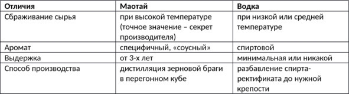

О культуре пития .. Маотай – элитный китайский дистиллят из сорго.


Маотай (Moutai) – это прозрачный китайский злаковый дистиллят крепостью 35—60% об. с характерным соевым привкусом. Название защищено по региональному принципу. Бренд изготавливают в одноименном городе провинции Гуйчжоу, сырьем для напитка служит ферментированное китайское сорго (гаолян) и пшеница.
История маотая началась 2 тыс. лет назад: китайские летописи II в до н. э. рассказывают о напитке гоцзян (слабоалкогольная брага из риса), который после изобретения дистилляции эволюционировал в современный вариант. У крестьян на севере страны, ежедневно работавших на рисовых плантациях по колено в холодной воде, не было другого выхода, кроме как придумать крепкий согревающий алкоголь. Однажды местную «огненную воду» попробовал император, и напиток так понравился монарху, что он приказал наладить производство и в своей провинции.
Когда большая часть Поднебесной еще пила легкие браги, на севере страны и в Гуйчжоу появился самогон. Жители городка Маотай взяли за основу рецепт гоцзян, но со временем дополнили его (в частности привязали циклы производства к лунному календарю), а также использовали вместо риса сорго, что изменило вкус.
Точную дату начала производства установить сложно, однако название «маотай» закрепил за напитком в 1704 году указ императора династии Цин. В 1915 году китайский самогон завоевал золотую медаль на выставке в Сан-Франциско, а в 1951 году получил титул национального алкоголя Китая. Всего на счету маотая более 20 побед в крупных международных конкурсах, не говоря уже о локальных мероприятиях.
Бренд стал первым китайским алкоголем, производство которого превысило 170 тонн продукции в год (сегодня этот показатель достигает 30 тыс. тонн). Напиток является непременным атрибутом всех официальных мероприятий в Китае, продается в 100 странах мира и является ощутимым источником дохода страны, так как компания-производитель Kwiechow Moutai Company принадлежит государству.
Долгое время маотай был спиртным элиты, недоступным обычному потребителю – в первую очередь из-за дороговизны, обусловленной длительностью и трудоемкостью производства. Теперь ситуация изменилась, но стоимость китайской водки по-прежнему высока: цена одной бутылки начинается от $130, а верхнего порога не существует – известны случаи, когда напиток уходил с аукциона за десятки тысяч долларов. Как раньше, так и сейчас спрос значительно превышает предложение.
Технология производства маотая
За основу берут равные доли местной пшеницы и сорго. Злаки подвергают сбраживанию на специальной закваске цзю цуй, которая содержит плесневые грибки (перерабатывают крахмал в зерне на сахар) и обычные дрожжи. После нескольких перегонок дистиллят выдерживают в керамических емкостях не менее трех лет и фильтруют.
Молодой маотай смешивают (купажируют) с образцами постарше. Выдержка отдельных спиртов может доходить до 50 лет. Полученный напиток разливают в бутылки и поставляют на рынок. Несмотря на высокую крепость (современный маотай продают в двух вариациях: 35 и 53 градусов), китайский самогон мягкий и легко пьется даже без закуски.
Настоящий маотай может производиться только в одноименном поселке – характерный вкус напитка обусловлен сочетанием местных климатических условий и воды из реки Чишуйхэ. Точное соблюдение технологии в любом другом месте не даст нужного эффекта.
Запах бродящего сорго такой резкий, что им буквально пропах весь город Маотай, тем более что на производстве водки трудится более половины жителей этого населенного пункта.
Отличия маотая от водки
Хотя в России маотай часто называют водкой, на самом деле это зерновой самогон.

Как пить маотай
Правильно пить маотай из маленьких фарфоровых пиал, причем «рюмка» никогда не должна оставаться пустой. В чисто мужской компании напиток не спеша потягивают, смакуя вкус и аромат, но при дамах мужчины всегда выпивают свою порцию залпом, до дна.
Нередко бутылка маотая комплектуется двумя-тремя крошечными стаканчиками – это неслучайно, именно такая порция считается оптимальной, чтобы насладиться вкусом, но сохранить относительно ясную голову.
Напиток хорошо сочетается с традиционными китайскими блюдами, особенно острыми, но закуска не обязательна: истинные гурманы предпочитают прочувствовать чистый букет, в котором дегустаторы насчитали 155 ноток.
Социальный аспект
Бутылка маотая считается идеальной взяткой – это достаточно солидный и дорогой подарок, который не стыдно преподнести официальным лицам, при этом формально по местному законодательству под определение взятки не подпадает.
Нередко люди покупают китайскую водку только как экспонат для своей коллекции или запасают на случай похода в вышестоящие инстанции. В Китае даже есть поговорка: те, кто покупают маотай, его не пьют, а те, кто пьют – не покупают.